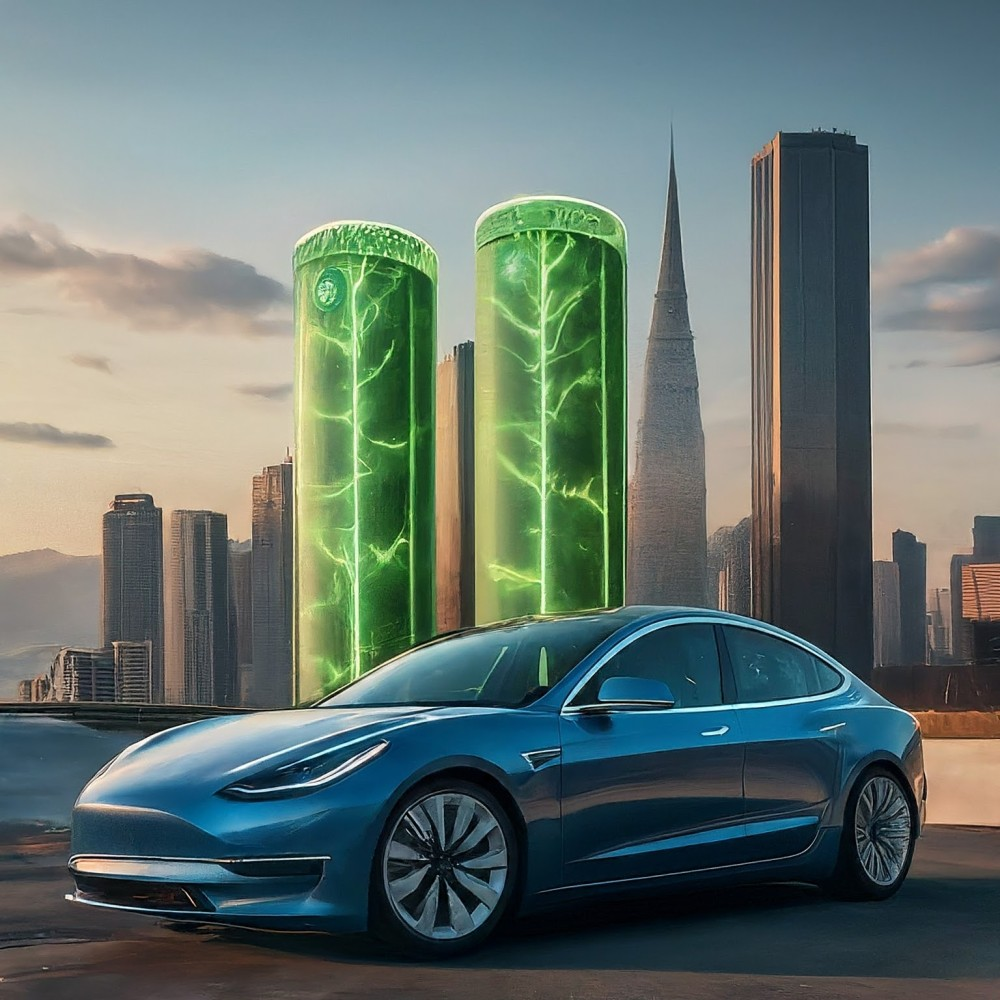
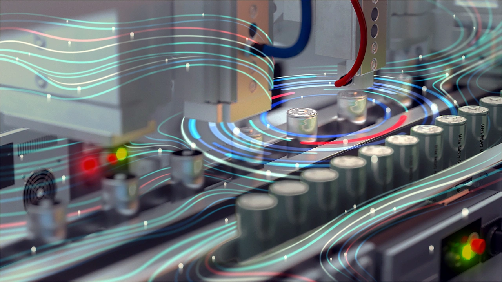
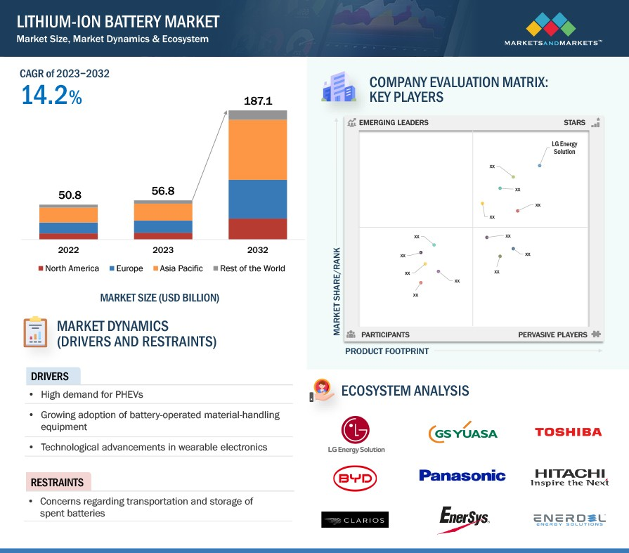

The lithium-ion battery market is experiencing remarkable growth, driven primarily by the booming electric vehicle (EV) sector and increasing demand for portable electronics and energy storage systems. According to industry analysts, the global lithium-ion battery market is projected to reach an impressive USD 187.1 billion by 2032, with a compound annual growth rate (CAGR) exceeding 14%. This surge reflects a broader trend in the automotive and electronics industries, where technological advancements and a push for sustainability are reshaping market dynamics.
Current Landscape of Lithium-ion Batteries
- Dominance in EVs: Lithium-ion batteries are currently the preferred choice for electric vehicles due to their high energy density, long lifespan, and fast charging capabilities. As EV sales soared to nearly 14 million globally in 2023—a 35% increase from the previous year—lithium-ion batteries have become integral to this growth.

- Import Dependency: Countries like India face challenges due to heavy reliance on imports for lithium-ion battery cells and critical materials. This dependency poses risks for the EV ecosystem, prompting government initiatives to promote domestic manufacturing through schemes such as the Production-Linked Incentive (PLI).
Innovations and Manufacturing Focus
The industry is witnessing significant innovations in materials and processes. Key areas of research include:
- New Electrolytes: Developing advanced electrolytes that enhance battery performance.
- Anode Materials: Innovations aimed at improving efficiency and sustainability.
- Recycling Techniques: Techniques focused on recycling to mitigate environmental impact.
Manufacturers are also striving to reduce reliance on cobalt, a material that poses ethical and environmental concerns in battery production.

Challenges and Opportunities
While the lithium-ion battery market presents vast opportunities, it is not without challenges:
- High Costs: The cost of lithium-ion batteries remains a significant barrier to widespread EV adoption.
- Range Anxiety: Despite improvements, potential buyers still express concerns about the range of electric vehicles.
- Battery Recycling: Ensuring proper disposal and recycling of lithium-ion batteries is crucial for environmental sustainability.
In response to these challenges, research into alternative technologies such as sodium-ion, solid-state, and lithium-sulfur batteries is gaining momentum. Sodium-ion batteries, in particular, are emerging as a promising alternative due to their potential cost-effectiveness and sustainability.
Government Support and Industry Collaboration
The Indian government is actively fostering an environment conducive to battery technology development through various initiatives. Key focus areas include:
- Indigenous Manufacturing: Developing local capabilities for battery production.
- R&D Promotion: Encouraging research in advanced battery technologies.
- Robust Recycling Ecosystem: Establishing systems for effective battery recycling.
- Policy Frameworks: Creating supportive policies for battery storage solutions.
By addressing current challenges and leveraging opportunities, India aims to position itself as a global leader in battery technology while accelerating EV adoption.

Infrastructure Development
As demand for electric vehicles grows, utilities are working diligently to expand EV charging infrastructure. The impact on grid infrastructure will be significant, necessitating investments in upgrades and expansions. Innovations in charging technology, such as vehicle-to-grid integration, are also emerging as key trends that will facilitate the transition to electric transportation.
Conclusion
The lithium-ion battery market stands at a pivotal moment, with substantial growth anticipated in the coming years. By focusing on innovation, sustainability, and cost-effectiveness, manufacturers can capture a significant share of this rapidly expanding market. As governments support domestic manufacturing and infrastructure development, the future of electric vehicles looks promising—setting the stage for a cleaner, more sustainable transportation landscape.